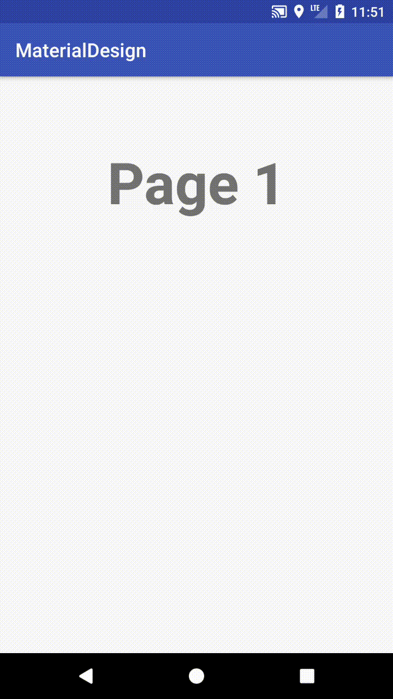

Introduction
ViewPager是在Android平台上很常見的組件之一，常用於需要左右滑動的視圖設計上，接下來我們就直接介紹如何創建一個ViewPager

1.在Layout上添加ViewPager
layout:
1
2
3
4
5
6
7
8
9
10
11
12
| <?xml version="1.0" encoding="utf-8"?>
<RelativeLayout
xmlns:android="http://schemas.android.com/apk/res/android"
android:layout_width="match_parent"
android:layout_height="match_parent">
<android.support.v4.view.ViewPager
android:layout_width="match_parent"
android:layout_height="220dp"
android:id="@+id/viewpager_id"/>
</RelativeLayout>
|
2.創建一個item view
layout:
1
2
3
4
5
6
7
8
9
10
11
12
13
14
15
16
17
| <?xml version="1.0" encoding="utf-8"?>
<LinearLayout
xmlns:android="http://schemas.android.com/apk/res/android"
android:orientation="vertical"
android:layout_width="match_parent"
android:layout_height="match_parent">
<android.support.v7.widget.AppCompatTextView
android:layout_width="match_parent"
android:layout_height="220dp"
android:id="@+id/textView_id"
android:text="1"
android:gravity="center"
android:textSize="60sp"
android:textStyle="bold"/>
</LinearLayout>
|
3.activity添加ViewPager Adapter
java:
1
2
3
4
5
6
7
8
9
10
11
12
13
14
15
16
17
18
| public class MainActivity extends AppCompatActivity {
private ViewPager viewPager;
private ViewPagerAdapter pagerAdapter;
@Override
protected void onCreate(Bundle savedInstanceState) {
super.onCreate(savedInstanceState);
setContentView(R.layout.activity_main);
viewPager = findViewById(R.id.viewpager_id);
pagerAdapter = new ViewPagerAdapter(this);
viewPager.setAdapter(pagerAdapter);
}
}
|
3.ViewPagerAdapter是繼承自PagerAdapter
java:
1
2
3
4
5
6
7
8
9
10
11
12
13
14
15
16
17
18
19
20
21
22
23
24
25
26
27
28
29
30
31
32
33
34
35
36
37
38
39
40
41
42
43
44
45
46
47
48
49
50
51
52
53
54
55
56
57
58
59
60
61
| public class ViewPagerAdapter extends PagerAdapter {
private Context context;
LayoutInflater inflater;
public ViewPagerAdapter(Context context) {
this.context = context;
}
public String[] pageNames = {
"Page 1",
"Page 2",
"Page 3",
"Page 4",
};
@Override
public int getCount() {
return pageNames.length;
}
@Override
public boolean isViewFromObject(@NonNull View view, @NonNull Object object) {
return (view == object);
}
@NonNull
@Override
public Object instantiateItem(@NonNull ViewGroup container, int position) {
inflater = (LayoutInflater) context.getSystemService(Context.LAYOUT_INFLATER_SERVICE);
View view = inflater.inflate(R.layout.viewpager_item_layout,container,false);
TextView txt = view.findViewById(R.id.textView_id);
txt.setText(pageNames[position]);
container.addView(view);
return view;
}
@Override
public void destroyItem(@NonNull ViewGroup container, int position, @NonNull Object object) {
container.removeView((LinearLayout)object);
}
}
|
運行效果如下：
參考資料：
Android Using ViewPager for Screen Slides